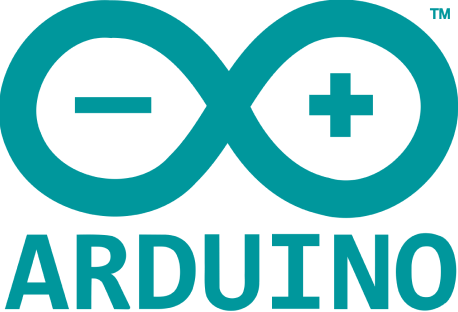
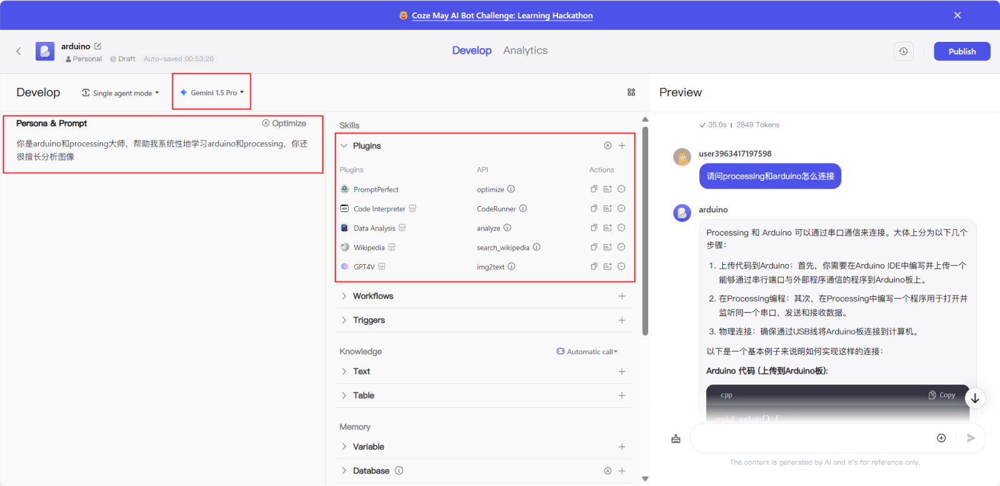
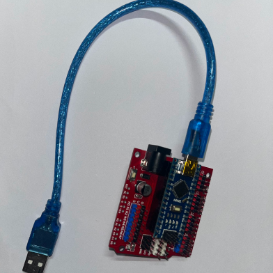
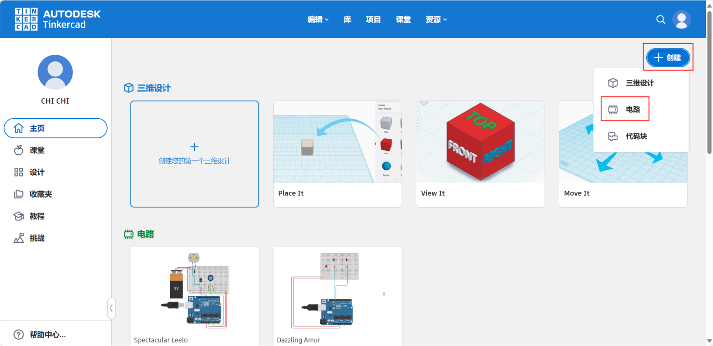
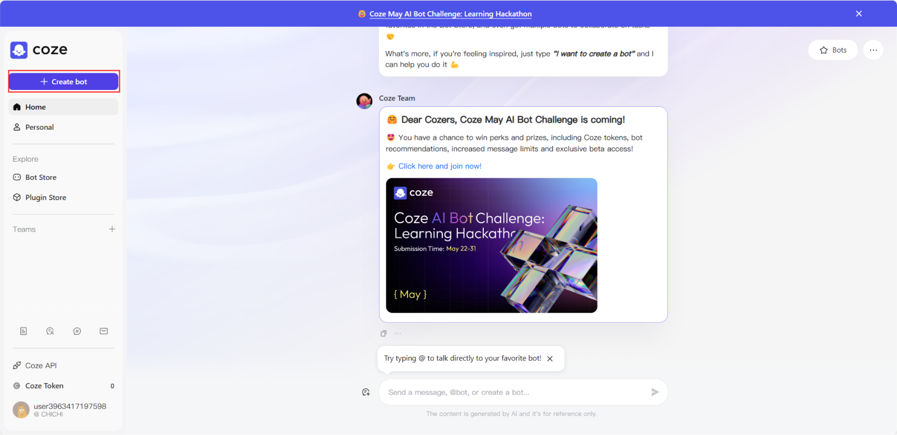
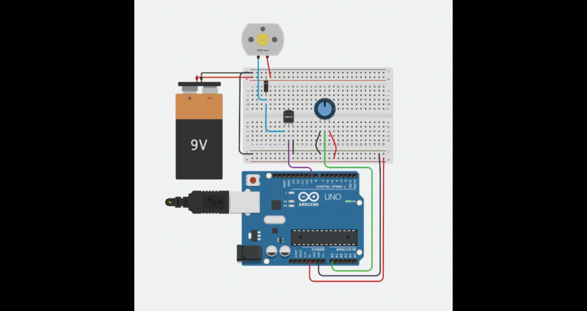
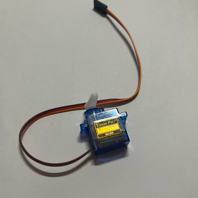

*Arduino Basic-How to learn Arduino?
*Controlling stepper motors with arduino (group task)
Arduino output
*Definition of open source hardware
Open-source hardware (OSH, OSHW) consists of physical
artifacts
of technology designed and offered by the
open-design movement
. Both
free and open-source software (FOSS) and open-source hardware are created by this open-source culture movement and apply a like concept
to a variety of components. It is sometimes, thus, referred to as FOSH (free and open-source hardware). The term usually means that information
about the hardware is easily discerned so that others can make it – coupling it closely to the maker movement .
Find the full definition on Wikipedia
Open-source hardware - Wikipedia
free and open-source software (FOSS) and open-source hardware are created by this open-source culture movement and apply a like concept
to a variety of components. It is sometimes, thus, referred to as FOSH (free and open-source hardware). The term usually means that information
about the hardware is easily discerned so that others can make it – coupling it closely to the maker movement .
Find the full definition on Wikipedia
Open-source hardware - Wikipedia
*Definition of Arduino
Arduino (/ɑːrˈdwiːnoʊ/) is an Italian open-source
hardware and software company, project, and user community that
designs and manufactures
single-board microcontrollers and microcontroller kits for building digital devices.
Arduino board designs use a variety of microprocessors and controllers. The boards are equipped with sets of digital and analog input/output (I/O) pins
that may be interfaced to various expansion boards ('shields') or breadboards (for prototyping) and other circuits.
The Arduino project began in 2005 as a tool for students at the Interaction Design Institute Ivrea, Italy, aiming to provide a low-cost and easy way for
novices and professionals to create devices that interact with their environment using sensors and actuators. Common examples of such devices
intended for beginner hobbyists include simple robots, thermostats, and motion detectors.
Arduino - Wikipedia
single-board microcontrollers and microcontroller kits for building digital devices.
Arduino board designs use a variety of microprocessors and controllers. The boards are equipped with sets of digital and analog input/output (I/O) pins
that may be interfaced to various expansion boards ('shields') or breadboards (for prototyping) and other circuits.
The Arduino project began in 2005 as a tool for students at the Interaction Design Institute Ivrea, Italy, aiming to provide a low-cost and easy way for
novices and professionals to create devices that interact with their environment using sensors and actuators. Common examples of such devices
intended for beginner hobbyists include simple robots, thermostats, and motion detectors.
Arduino - Wikipedia
*Arduino basic control board
A stepper motor, also known as step motor or stepping motor,is an electrical
motor that rotates in a series of small angular steps, instead of
continuously.Stepper motors are a type of digital actuator. Like other
electromagnetic actuators, they convert electric energy
into mechanical position can be commanded to move and hold at one of these
steps without any position sensor for feedback (an open-loop controller), as
long as the motor is correctly sized to the application in respect
to torque and speed.
Stepper motor - Wikipedia
Stepper motor - Wikipedia
The reason why we use stepper motors is that we use precise rotation angles
to control the balls to fall one by one. If we want to add more grooves to
the parts, we can adjust the angles in the code without being restricted by
the fixed rotation angles of the motor. I found a tutorial on the Internet
platform that teaches you how to assemble and drive stepper motors, and
found pictures of the motor connections.
arduino control motors


arduino control motors
*The final code is here
1.Arduino Nano board
2.SG90 Servo
2.SG90 Servo
*Component

*processing and arduino linkage
In the processing page, one black ball drops down every two seconds.If
three balls fall in total, the ball stops falling for five seconds.In
addition, the blade of the steering engine controlled by arduino is
rotated 180 degrees to the right for two seconds, and then rotated 180
degrees to the left to return to the original position
*Click on the red box
*Tinkercad-DC motor

Arduino Code:
copy
#include <Servo.h>
Servo myservo; // 创建舵机对象
int servoPin = 9; // 舵机连接的脚位
void setup() {
myservo.attach(servoPin); // 将舵机绑定到指定脚位
Serial.begin(9600); // 开始串行通信，波特率9600
}
void loop() {
if (Serial.available() > 0) {
char inChar = (char)Serial.read(); // 读取串行输入的字符
if (inChar == 'R') { // 如果接收字符是'R'
myservo.write(180); // 舵机旋转到180度
delay(2000); // 暂停两秒钟
myservo.write(0); // 返回到0度
}
}
}
https://www.tinkercad.com

*Click on the red box, Search for DC motor, select the appropriate circuit
and click on Start Simulation.

*Click on the red box,Briefly describe the personal&prompt, add some
plug-ins only but not limited to (Code Interpreter&Data Analysis),also
but not necessary, modify the Model Configuration in the upper left
corner.
*How to realise?
*Register and Login Coze
https://www.coze.com
*Register and Login Tinkercad
*Ask Coze for
*How to connect processing and arduino?
*Please help me to write a code on processing to make the black ball drop
every 1 second on the right side of the white canvas of 1920*1080
*If you want to change the position of the ball to the center of the
screen, which part of the code should you change?
*Can you help me write a program on the arduino that connects to the
processing and has the ability to control the servo to turn 180 degrees
to the right when the three black balls fall off the canvas?
to the right when the three black balls fall off the canvas?
*Modify the PROCESSING program and the arduino program and write it out
completely to be able to connect with the arduino program
mentioned above, so that the black ball drops every 1 second on the right side of the white canvas of 1920*1080,and there are
only three black balls, and when all of them drop out of the canvas, then the servo will be controlled to rotate to the right by 180 degrees.
mentioned above, so that the black ball drops every 1 second on the right side of the white canvas of 1920*1080,and there are
only three black balls, and when all of them drop out of the canvas, then the servo will be controlled to rotate to the right by 180 degrees.
*Modify the processing program and arduino program and write it out
completely, in the processing, let the black ball in the 1920 * 1080 white
canvas on the right side of the drop every 1 second, there are and only three black ball, when the ball all fall out of the canvas, then use
the arduino to control the servo to the right 180 degrees!
canvas on the right side of the drop every 1 second, there are and only three black ball, when the ball all fall out of the canvas, then use
the arduino to control the servo to the right 180 degrees!
*Keep the connection with arduino, let the black ball drop every 1 second
on the right side of the white canvas of 1920*1080 in the processing,
modify the processing and arduino code above as follows:
1.the height of each ball falling in the processing is kept equal
2.When three balls fall out of the canvas in the processing, control the servo in the arduino to rotate 180 degrees to the right,
and control the servo to rotate 180 degrees to the left after a delay of two seconds.
3.processing in the cumulative number of ball drop to meet the number of 3, then return to the number of 0, and control the ball to stop falling,
in 5 seconds to restart the fall
modify the processing and arduino code above as follows:
1.the height of each ball falling in the processing is kept equal
2.When three balls fall out of the canvas in the processing, control the servo in the arduino to rotate 180 degrees to the right,
and control the servo to rotate 180 degrees to the left after a delay of two seconds.
3.processing in the cumulative number of ball drop to meet the number of 3, then return to the number of 0, and control the ball to stop falling,
in 5 seconds to restart the fall
*How to change the falling speed of the ball
*How to change the ball to drop every two seconds?
*By asking coze these questions, you will understand how to make a small
sample of the interaction between arduino and processing linkage
*How to realise?


2. Install Arduino IDE
Download and install the Arduino IDE from the official Arduino website.
Connect the Arduino board (e.g. Arduino Uno) to the computer.
Download and install the Arduino IDE from the official Arduino website.
Connect the Arduino board (e.g. Arduino Uno) to the computer.
3. Basic programming and electronics knowledge
1.Basic Programming:
Familiarize yourself with the Arduino IDE interface.
Understand basic C/C++ syntax, such as variables, data types, loops, and conditional statements.
2.Basic Electronics:
Learn how basic electronic components, such as resistors, capacitors, diodes, and LEDs, work.
Understand how to connect circuits, such as using breadboards and jumper wires.
1.Basic Programming:
Familiarize yourself with the Arduino IDE interface.
Understand basic C/C++ syntax, such as variables, data types, loops, and conditional statements.
2.Basic Electronics:
Learn how basic electronic components, such as resistors, capacitors, diodes, and LEDs, work.
Understand how to connect circuits, such as using breadboards and jumper wires.
4. Practice the Arduino project:
Open the Arduino IDE and connect the Arduino board to your computer.
Write code in Arduino IDE (specific examples below).
Open the Arduino IDE and connect the Arduino board to your computer.
Write code in Arduino IDE (specific examples below).
5. Learning resources
Official website: Arduino.cc
Tutorial website: Arduino Project Hub
Books:
Getting Started with Arduino book series
Arduino Projects for Dummies
Online Courses:
Coursera, Udemy, edX have many courses on Arduino.
Official website: Arduino.cc
Tutorial website: Arduino Project Hub
Books:
Getting Started with Arduino book series
Arduino Projects for Dummies
Online Courses:
Coursera, Udemy, edX have many courses on Arduino.
6. Extension Projects
With some extension projects, you can go deeper into the application of Arduino:
Sensor project: temperature sensor, ultrasonic sensor, light sensor, etc.
Display project: use LCD display to show information.
Wireless communication: use Bluetooth or WiFi module.
Robotics projects: making simple robots and learning about movement control, obstacle avoidance, etc.
With some extension projects, you can go deeper into the application of Arduino:
Sensor project: temperature sensor, ultrasonic sensor, light sensor, etc.
Display project: use LCD display to show information.
Wireless communication: use Bluetooth or WiFi module.
Robotics projects: making simple robots and learning about movement control, obstacle avoidance, etc.
*Common application boards for arduino
Processing Code:
copy
import processing.serial.*;
Serial myPort; // 所使用的串行端口
ArrayList<Ball> balls; // 存储小球的列表
int lastTime; // 上一个小球添加的时间
int ballCount; // 记录已掉落小球的数量
void setup() {
size(1920, 1080); // 设定画布大小
balls = new ArrayList<Ball>(); // 初始化小球列表
println(Serial.list()); // 打印可用的串行端口列表
myPort = new Serial(this, Serial.list()[0], 9600); // 打开第一个串行端口
lastTime = millis(); // 记录初始化时间
}
void draw() {
background(255); // 设置背景为白色
if (millis() - lastTime >= 2000) { // 检查是否过去了2秒钟
lastTime = millis(); // 重置计时器
if (ballCount < 3) { // 判断是否已经有三个小球
Ball newBall = new Ball(width - 400, 50); // 在屏幕的右侧侧边生成新的小球
balls.add(newBall);
}
// 清除已经落出画布的小球，并统计数量
for (int i = balls.size() - 1; i >= 0; i--) {
if (balls.get(i).y > height) {
balls.remove(i);
ballCount++;
}
}
if (ballCount >= 3) { // 当有三个小球掉落时
myPort.write('R'); // 发送字符'R'至Arduino
ballCount = 0; // 重置小球计数
delay(5000); // 暂停发送新小球的生成，等待5秒后再次开始
lastTime = millis(); // 重置时间以开始新一轮的小球生成
}
}
// 更新并显示在画布中的小球
for (int i = 0; i < balls.size(); i++) {
Ball ball = balls.get(i);
ball.update();
ball.display();
}
}
class Ball {
float x, y;
float speedY = 10; // 小球下落速度
float diameter = 50; // 小球直径
Ball(float tempX, float tempY) {
x = tempX;
y = tempY;
}
void update() {
y += speedY; // 根据速度更新小球位置
}
void display() {
fill(0); // 小球颜色设置为黑色
ellipse(x, y, diameter, diameter); // 绘制小球
}
}